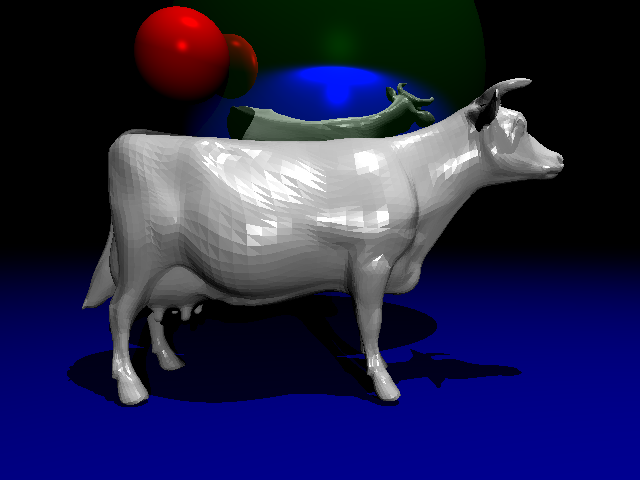
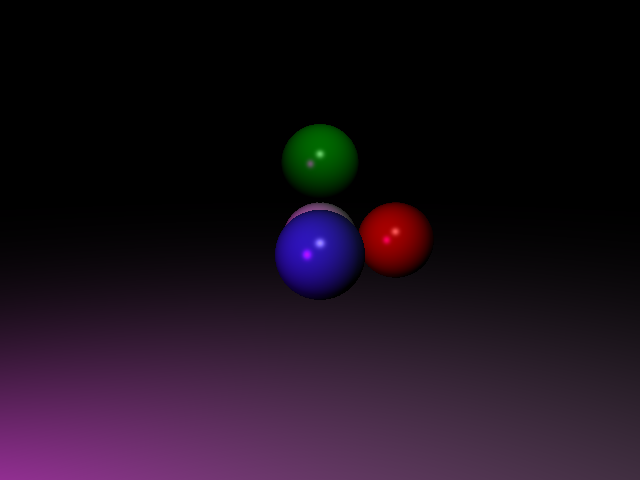
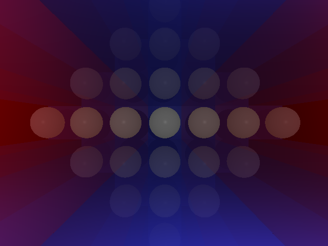
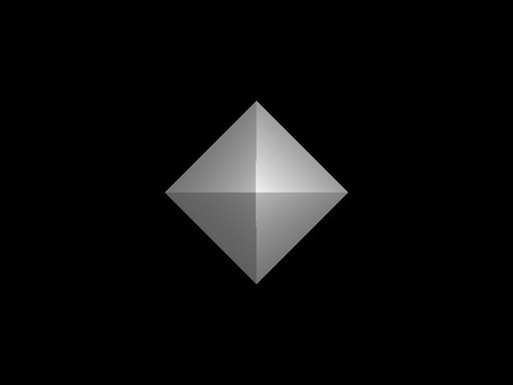
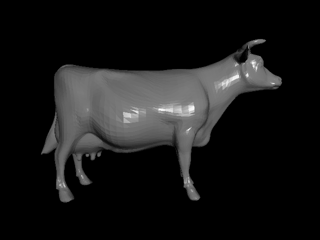

Ray Tracer
Graphics Programming — Individual Project
Overview
A custom C++ ray tracer that reads scene descriptions and produces portable PPM renders. The renderer is modular, supports recursive reflections and shadowing, and is tuned for clarity and reproducibility.
Tech Stack
- C++
- SCons
More Screenshots




Project Details
Shaders
Shading is split into modular shader types: a Phong-style shader for diffuse and specular lighting, a reflective shader for mirror-like surfaces, and a flat/debug shader for quick visual checks. Each shader receives the incident ray, surface point, and normal, and returns an RGB contribution while respecting recursion limits for secondary rays.
Lighting
The renderer supports point, spot, and directional lights with an ambient term and per-light intensity. Shadowing is implemented by casting shadow rays toward each light, allowing accurate hard shadows and straightforward toggling of shadow computation for performance comparisons.
Geometry & Meshes
Supported geometry includes analytic primitives (spheres and planes) plus triangle-based meshes for complex shapes. Each primitive provides robust intersection and normal computations, enabling correct shading and stable results at grazing angles.
Ray Casting & Intersections
Primary rays are generated from a configurable camera and traced recursively for reflections. A nearest-hit routine finds the closest valid intersection and returns a hit record used by shaders to evaluate surface lighting and spawn secondary rays when needed.
Bounding‑Volume Hierarchy
To limit expensive triangle and primitive tests, the renderer builds a bounding‑box hierarchy that groups object parts and prunes traversal. The hierarchy is built once before rendering and dramatically reduces the number of ray‑object intersection tests on complex scenes.